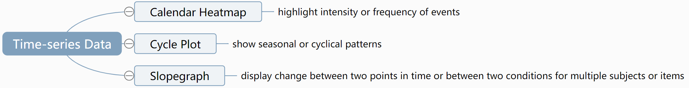
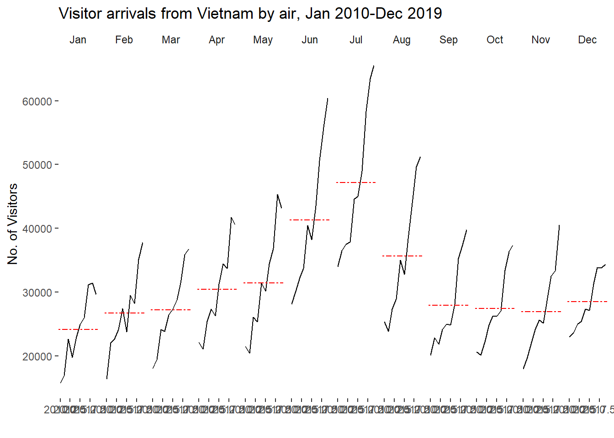
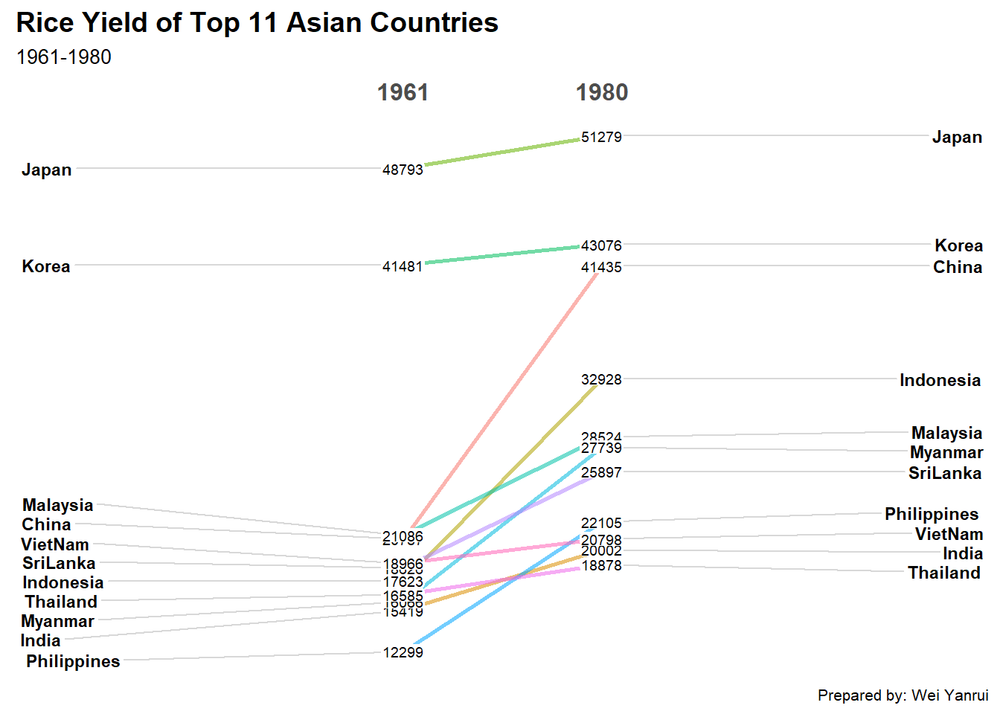

pacman::p_load(scales,viridis, lubridate,
ggthemes, gridExtra, readxl,
knitr, data.table,CGPfunctions,
ggHoriPlot, tidyverse)Hands-on Exercise 6: Visualising and Analysing Time-Oriented Data
1. Roadmap for studying

2. Getting Started
2.1 Import and load packages
The following R packages will be used in this exercise:
3. Plotting Calendar Heatmap
3.1 Overview of Calendar Heatmap
Calendar Heatmaps are particularly useful for highlighting the intensity or frequency of events over a calendar period.
Here are several scenarios where calendar heatmaps can be effectively used for visualization:
Website Traffic Analysis: To visualize daily website visits or user activity, highlighting peak usage times or identifying days with unusually low traffic.
Fitness Tracking: For displaying daily workout durations, steps taken, or calories burned, allowing users to easily see their activity patterns over time.
Sales Data Visualization: To show daily sales figures for a business, making it easy to spot trends, seasonal effects, or particular days with high sales volumes.
Social Media Engagement: To track daily likes, comments, or shares on social media posts, helping to identify content that performs well or times when engagement spikes.
Project Management and Productivity: For tracking tasks completed, time spent on projects, or milestones reached on a daily basis, offering insights into productivity patterns.
Health and Medical Records: To monitor daily health-related metrics, such as blood sugar levels, blood pressure, or symptom frequency, useful for patients and healthcare providers to identify trends or triggers.
Environmental Data Monitoring: To display daily temperature, rainfall, or air quality index readings, useful for environmental analysis and understanding seasonal variations.
Energy Consumption Analysis: For visualizing daily electricity, gas, or water usage, helping households or businesses to identify periods of high consumption and potential for savings.
Software Development: To track daily commits, pull requests, or issues closed in a software project, highlighting productivity and collaboration patterns within a development team.
Customer Support: For visualizing the number of support tickets received or resolved each day, helping to identify peak times for customer issues and evaluate support team performance.
Attendance and Absenteeism: To track daily attendance records in schools or workplaces, making it easier to spot absenteeism trends and address issues promptly.
Financial Markets: For tracking daily stock prices, trading volumes, or market indices, allowing investors to spot trends and make informed decisions based on historical performance.
Event Logging and Monitoring: For IT infrastructure, to visualize logs or alerts generated each day, helping in identifying patterns of system behavior or potential security breaches.
3.2 Importing the data
For the purpose of this hands-on exercise, eventlog.csv file will be used. This data file consists of 199,999 rows of time-series cyber attack records by country.
attacks <- read_csv("data/eventlog.csv")3.3 Examining the data structure
It is always a good practice to examine the imported data frame before further analysis is performed.
For example, kable() can be used to review the structure of the imported data frame.
kable(head(attacks))| timestamp | source_country | tz |
|---|---|---|
| 2015-03-12 15:59:16 | CN | Asia/Shanghai |
| 2015-03-12 16:00:48 | FR | Europe/Paris |
| 2015-03-12 16:02:26 | CN | Asia/Shanghai |
| 2015-03-12 16:02:38 | US | America/Chicago |
| 2015-03-12 16:03:22 | CN | Asia/Shanghai |
| 2015-03-12 16:03:45 | CN | Asia/Shanghai |
There are three columns, namely timestamp, source_country and tz.
timestamp field stores date-time values in POSIXct format.
source_country field stores the source of the attack. It is in ISO 3166-1 alpha-2 country code.
tz field stores time zone of the source IP address.
3.4 Data Preparation
Step 1: Deriving weekday and hour of day fields
Before we can plot the calender heatmap, two new fields namely wkday and hour need to be derived. In this step, we will write a function to perform the task.
make_hr_wkday <- function(ts,sc,tz){
real_times <- ymd_hms(ts,
tz=tz[1],
quiet = TRUE)
dt <- data.table(source_country = sc,
wkday = weekdays(real_times),
hour = hour(real_times))
return(dt)
}Step 2: Deriving the attacks tibble data frame
wkday_levels <- c('Saturday', 'Friday',
'Thursday', 'Wednesday',
'Tuesday', 'Monday',
'Sunday')
attacks <- attacks %>%
group_by(tz) %>%
do(make_hr_wkday(.$timestamp,
.$source_country,
.$tz)) %>%
ungroup() %>%
mutate(wkday = factor(
wkday, levels = wkday_levels),
hour = factor(
hour, levels = 0:23))Table below shows the tidy tibble table after processing.
kable(head(attacks))| tz | source_country | wkday | hour |
|---|---|---|---|
| Africa/Cairo | BG | Saturday | 20 |
| Africa/Cairo | TW | Sunday | 6 |
| Africa/Cairo | TW | Sunday | 8 |
| Africa/Cairo | CN | Sunday | 11 |
| Africa/Cairo | US | Sunday | 15 |
| Africa/Cairo | CA | Monday | 11 |
3.5 Building the Calendar Heatmap
grouped <- attacks %>%
count(wkday, hour) %>%
ungroup() %>%
na.omit()
ggplot(grouped,
aes(hour,
wkday,
fill=n))+
geom_tile(color="white",
size=0.1)+
theme_tufte(base_family = "Helvetica")+
coord_equal()+
scale_fill_gradient(name="# of attacks",
low="skyblue",
high="darkblue")+
labs(x=NULL,
y=NULL,
title="Attacks by weekday and time of day")+
theme(axis.ticks=element_blank(),
plot.title=element_text(hjust=0.5),
legend.title=element_text(size=8),
legend.text=element_text(size=6))
3.6 Building Multiple Calendar Heatmaps
In this sector, we will extend one calendar heatmap to multiple heatmaps for the top four countries with the highest number of attacks.
Step 1: Deriving attack by country object
In order to identify the top 4 countries with the highest number of attacks, you are required to do the followings:
count the number of attacks by country
calculate the percent of attackes by country
save the results in a tibble data frame
attacks_by_country <- count(
attacks, source_country) %>%
mutate(percent=percent(n/sum(n))) %>%
arrange(desc(n))Step 2: Preparing the tidy data frame
In this step, you are required to extract the attack records of the top 4 countries from attacks data frame and save the data in a new tibble data frame (i.e. top4_attacks).
top4 <- attacks_by_country$source_country[1:4]
top4_attacks <- attacks %>%
filter(source_country %in% top4) %>%
count(source_country,wkday,hour) %>%
ungroup() %>%
mutate(source_country = factor(
source_country, levels=top4)) %>%
na.omit()Step 3: Plotting the Multiple Calender Heatmap by using ggplot2 package.
ggplot(top4_attacks,
aes(hour,
wkday,
fill=n))+
geom_tile(color="white",
size=0.1)+
theme_tufte(base_family = "Helvetica")+
coord_equal()+
scale_fill_gradient(name="# of attacks",
low="skyblue",
high="darkblue")+
facet_wrap(~source_country, ncol=2)+
labs(x=NULL,y=NULL,
title="Attacks on top 4 countries by weekday and time of day")+
theme(axis.ticks=element_blank(),
axis.text.x = element_text(size=7),
plot.title = element_text(hjust=0.5),
legend.title = element_text(size=8),
legend.text = element_text(size=6))
4. Plotting Cycle Plot
4.1 Overview
Cycle plots are a type of visualization used to explore trends and patterns over time, particularly when data exhibits seasonal or cyclical patterns.
Here are several scenarios where cycle plots can be particularly useful for visualization:
Sales and Retail Analysis: For tracking monthly or quarterly sales data to identify seasonal trends, such as increased sales during holiday periods or summer slumps.
Weather and Climate Studies: To examine temperature, precipitation, or other weather variables across different seasons or years, helping to identify long-term climate trends alongside seasonal variability.
Energy Consumption: Analyzing daily or monthly electricity or gas usage to identify patterns of consumption that vary by season, such as higher energy use in winter for heating or in summer for air conditioning.
Tourism and Hospitality: Understanding seasonal trends in hotel bookings, flights, or tourist arrivals, which can be critical for planning and resource allocation.
Agriculture: Monitoring crop yields or pest activity across different planting seasons to assist in planning for planting, harvesting, and pest control.
Financial Markets: Analyzing seasonal effects in stock market returns or the performance of certain sectors, such as the retail sector’s performance during the holiday shopping season.
Website Traffic: Examining patterns in website visits or user engagement metrics to identify times of the year when traffic peaks or dips, which can inform content and marketing strategies.
Healthcare and Epidemiology: Tracking the occurrence of infectious diseases or hospital admissions to identify seasonal patterns, such as flu season peaks or variations in certain conditions related to weather or seasonal activities.
Transportation and Traffic Analysis: Understanding seasonal variations in traffic patterns, public transportation usage, or air travel to improve planning and infrastructure development.
Product Lifecycle Management: Analyzing the sales cycle of different products to understand seasonal demand patterns, which can guide inventory management and promotional activities.
4.2 Import data
For the purpose of this hands-on exercise, arrivals_by_air.xlsx will be used.
The code chunk below imports arrivals_by_air.xlsx by using read_excel() of readxl package and save it as a tibble data frame called air.
air <- read_excel("data/arrivals_by_air.xlsx")4.3 Data Preparation
Step 1: Deriving month and year fields
Two new fields called month and year are derived from Month-Year field.
air$month <- factor(month(air$`Month-Year`),
levels=1:12,
labels=month.abb,
ordered=TRUE)
air$year <- year(ymd(air$`Month-Year`))Step 2: Extracting the target country
the code chunk below is use to extract data for the target country (i.e. Vietnam)
Vietnam <- air %>%
select(`Vietnam`,
month,
year) %>%
filter(year >= 2010)Step 3: Computing year average arrivals by month
The code chunk below uses group_by() and summarise() of dplyr to compute year average arrivals by month.
hline.data <- Vietnam %>%
group_by(month) %>%
summarise(avgvalue=mean(`Vietnam`))4.4 Plotting the cycle plot
ggplot()+
geom_line(data=Vietnam,
aes(x=year,
y=`Vietnam`,
group=month),
colour="black")+
geom_hline(aes(yintercept=avgvalue),
data=hline.data,
linetype=6,
colour="red",
size=0.5)+
facet_grid(~month)+
labs(title="Visitor arrivals from Vietnam by air, Jan 2010-Dec 2019")+
theme(axis.text.x=element_blank())+
xlab("")+
ylab("No. of Visitors")+
theme_tufte(base_family = "Helvetica")
5. Plotting Slopegraph
5.1 Overview
Slopegraphs are a type of visualization that display change between two points in time or between two conditions for multiple subjects or items.
They are particularly useful for highlighting the magnitude of change, ranking shifts, or comparing individual trajectories.
Here are several scenarios where slopegraphs can be effectively used for visualization:
Pre and Post Analysis: Comparing metrics before and after a specific event or intervention, such as sales figures before and after a marketing campaign, to visualize the impact.
Year-over-Year Performance: Tracking changes in performance metrics, such as revenue or customer satisfaction scores, across different years for multiple departments or products.
Educational Growth or Decline: Visualizing test scores or graduation rates across different schools or districts from one year to the next, to identify trends in educational outcomes.
Healthcare Trends: Comparing patient outcomes, such as recovery rates or disease incidence, before and after implementing new healthcare policies or treatments.
Environmental Changes: Tracking changes in environmental data, like air quality or temperature averages, between two time periods to highlight climate change or the impact of environmental policies.
Economic Indicators: Visualizing shifts in economic indicators like GDP, unemployment rates, or inflation between two time points for different countries or regions.
Technology Adoption Rates: Comparing the adoption rates of different technologies or software versions between two time points to analyze market trends.
Employee or Team Performance: Evaluating changes in employee productivity or team performance metrics between two evaluation periods.
Social Media Engagement: Tracking changes in social media metrics, such as follower count or engagement rates, before and after a campaign or event.
Sports Statistics: Comparing athletes’ performance stats, such as race times or points scored, across seasons or before and after a coaching change.
5.2 Import data
Import the rice data set into R environment by using the code chunk below.
rice <- read_csv("data/rice.csv")5.3 Plotting the slopegraph
Code chunk below will be used to plot a basic slopegraph as shown below.
rice %>%
mutate(Year = factor(Year)) %>%
filter(Year %in% c(1961,1980)) %>%
newggslopegraph(Year, Yield, Country,
Title = "Rice Yield of Top 11 Asian Countries",
SubTitle = "1961-1980",
Caption = "Prepared by: Wei Yanrui")